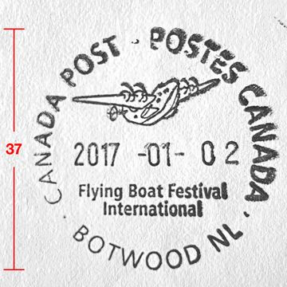
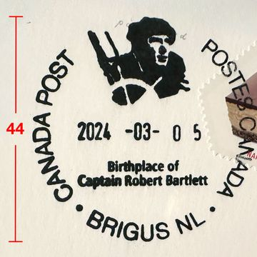
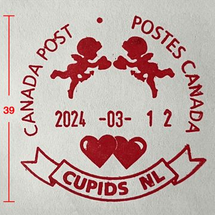
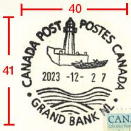
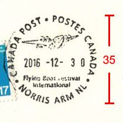
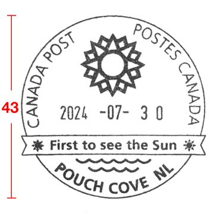
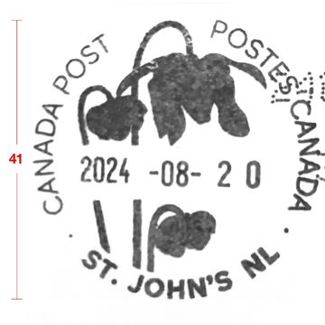
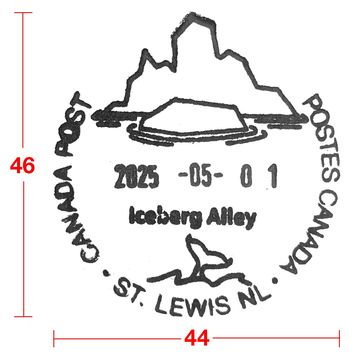
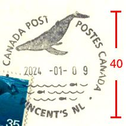
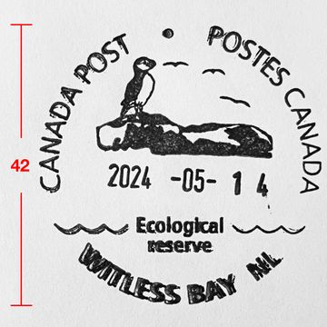

Pictorial cancels in Newfoundland and Labrador
We have recorded 21 pictorial cancels in this province. 20 are still in use and can be requested from the post office, in person or by mail.
In use (20)

Botwood POAircraftActive · ?–present Botwood POMuralActive · 2018–present
Botwood POMuralActive · 2018–present
Brigus POBirthplace of Captain Robert BartlettActive · ?–present Cupids POEnglish CanadaActive · 2022–2032
Cupids POEnglish CanadaActive · 2022–2032
Cupids POHeartActive · 2022–2032 Dildo POMaple leaf, trees, sign.Active · ?–present
Dildo POMaple leaf, trees, sign.Active · ?–present
Grand Bank POGrand Bank Lighthouse, boat, wavesActive · ?–present Heart's Content POBlackActive · 2022–2032
Heart's Content POBlackActive · 2022–2032 Heart's Content PORedActive · 2022–2032
Heart's Content PORedActive · 2022–2032 L'Anse-au-Loup PO2nd versionActive · 2015–present
L'Anse-au-Loup PO2nd versionActive · 2015–present
Norris Arm POFlying Boat Festival InternationalActive · ?–present
Pouch Cove POFirst to see the SunActive · ?–present
St John's A POFlowerActive · 2024–present
St Lewis POIceberg AlleyActive · 2019–2030
St Vincent's POHumpback whaleActive · ?–present Trinity POBoatActive · ?–present
Trinity POBoatActive · ?–present Twillingate POIceberg Capital of the World / Capitale mondiale de lActive · 2024–2035
Twillingate POIceberg Capital of the World / Capitale mondiale de lActive · 2024–2035 Winterton POTRINITY HALL / CREATE, CONCREGATE, CELEBRATE / CRÉATION, RASSEMBLEMENT, CÉLÉBRATIONActive · ?–present
Winterton POTRINITY HALL / CREATE, CONCREGATE, CELEBRATE / CRÉATION, RASSEMBLEMENT, CÉLÉBRATIONActive · ?–present Winterton POWooden Boat Museum of of Newfoundland & LabradorActive · 2022–present
Winterton POWooden Boat Museum of of Newfoundland & LabradorActive · 2022–present
Witless Bay POEcological ReserveActive · 2017–present
Retired (1)
 L'Anse-au-Loup PO1st version
L'Anse-au-Loup PO1st versionOther provinces and territories: Alberta · British Columbia · Manitoba · New Brunswick · Nova Scotia · Ontario · Prince Edward Island · Quebec · Saskatchewan · Northwest Territories · Nunavut · Yukon